Week 4 - Uploading to Unity and Testing
In week 4, Beverly was allocated to building the world while others were focusing on finishing up the report. She progressed through timeline phases 3-6 (Building the Classroom, Applying VRCSDK2, Uploading onto VRC Servers, Testing and Debugging).
World Development Process and Notes- Written by Beverly in first-person Creating a Test World First and foremost, to test and experiment with VRChat’s SDK and Unity tools, created a mock-up world featuring an object with gravity, an object without, and a button that toggles a mirror. Figure below features the three stages of the mock-up process, the image on the left shows the building concept in Unity, right showcases the unpublished world for testing, and bottom shows the published world on VRChat.
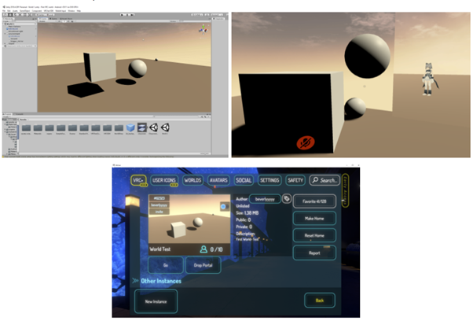Figure - the three stages of the mock up process of creating and uploading a VR world on VRChat serves.
In the test world I noticed I couldn't jump even though I added a component that enabled that action, other than that there were no issues and I felt comfortable moving onto developing the classroom. Aspects that I liked that I will take into the classroom is the skybox which emitted a calming warm tone onto the scene.
Creating the Classroom - Building the Foundations First and foremost, to create a vector perfect scene, I developed the foundation of the VR room in Blender. My first attempt consisted of layering four flat rectangles together to create a window hole, when I exported this file to blender it caused overlapping texture complications and was overall unappealing. Below (Figure) is a screencap from the failed attempt.
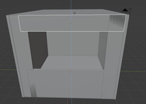 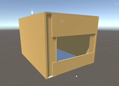Figure - First attempt of creating the classroom foundation
In my second attempt, I made use of tools such as ‘loop cut’ in Edit Mode. With this and a few other functions, I created a scene without the complications mentioned prior. In the unity preview (left) the walls do not appear from the outside looking in. This is not ideal, but doesn’t make a difference since the user will not leave the room anyways, on the flip-side, this does make building slightly easier.
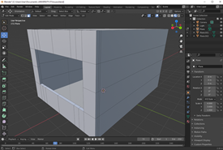 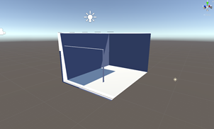Figure - Second attempt of creating the classroom foundation
Creating the Classroom - Importing Interior After the classroom was successfully implemented into Unity, the next step was to begin adding interior. Throughout this project, I only used assets available from Sketchfab.com where independent creators and artists can offer free or paid assets to consumers. I credited each asset I used in the references below. It was ideal that each asset I downloaded was in an .fbx file, although .blend files were do-able too. There were some assets that did not completely fit the criteria that I needed, therefore I simply ‘unpacked’ the prefab, which allowed me to make changes to the prefab and deleted parts that I did not want. For example, the window that I imported had planes covering the window so the user could not see outside, I simply just selected and deleted these assets (see below).
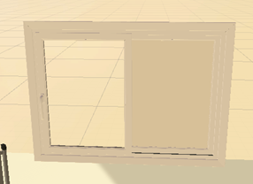Figure - Window with a deleted plane (left) and its unremoved plane (right)
Creating the Classroom - First Test Build Below I have written some notes for my first test build.
- Reflection in mirror too bright, need to fix lighting
- Whiteboard too tall for an average avatar height
- Roof doesn’t render
- Jumping slightly glitched
- Physics components work fine
- Colliders work well
- Items don’t respawn OR fall infinitely
Figure - First test build
Creating the Classroom - Second Test Build Second test build notes
- Mirror still bad
- Door too tall
- Able to phase through table + cupboard + whiteboard
- Cupboard possibly too tall
Figure - Second test build
Creating the Classroom - Third Test Build
- Relocated mirror
- Added more vibrant colours and toys
- Relocated table and added shelf instead
- Added backpacks on hooks
- Toy parts with pickup enabled kept falling through ground
- Added mesh colliders (did not fix issue)
- Swapped for box colliders (fixed issue)
Figure - Third test build
Creating the Classroom - Fourth Test Build
- Added more vibrant colours to appeal to our target age group (8-12)
- Forgot to make organ objects floating with no gravity, so they clipped and flew out of the original positions when world loaded
- Crate stool doesn't work to elevate the user to higher places. Users just phase through it
- Media player works
- Toy parts do not clip from ground
Figure - Fourth test build
Creating the Classroom - Fifth Test Build
- Fixed mirror by deleting the extra lighting created imported by the initial blender house-box
- Everything works
- Relocated table and added shelf instead
- Objects are a bit too big so it’s hard to correctly position them on the labels
- Buttons work perfectly
- Buttons are global- everyone in the instances sees changes, not just the user
- Organs clip through walls sometimes, organs are too big and sometimes obstructive
- Due to time constraints i cannot fix this issue
- Organs sometimes break- they will lag when the user tries to hold them
Figure - Fifth test build
Creating the Classroom - Showcasing buttons Below shows the amount of objects that are connected to a single button, in this case, the ‘Human Body’ class alone is connected to several items that will toggle on once interacted with (see the white lines in Figure). Several items that are not visually present below (such as instructions, organs, and other buttons) will be toggled on when the user selects the Human Body button in-game, also, the Human Body button also toggles off the dinosaur photo.
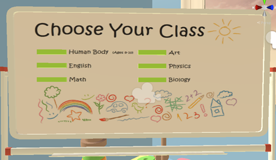 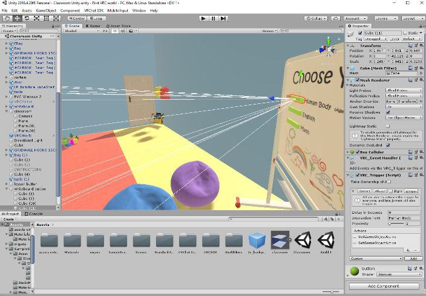 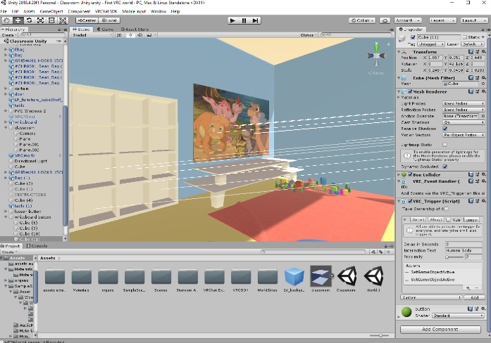Figure - Showcasing buttons
Creating the Classroom - Showcasing Some Configurations Below are some of the configurations of specific items that instructed them to function the way I intend for them to do. Figure is the configuration to set for a button to specifically display the minigame answers once completed, I have highlighted some important settings to note. I have done the same for Figure, which is the configuration for setting objects to float in a static position.
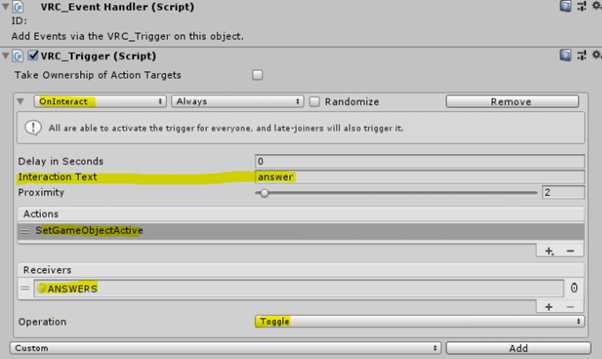 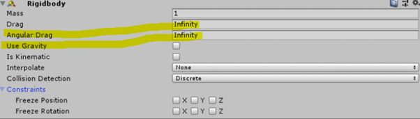Figure - Configuration on setting objects to float in a static position
Creating the Classroom - Completed Artefact This completed artefact was published to Windows and Android, which means that PC users and mobile VR users (such as Oculus Quest 2 owners) may be able to access the world. Below shows the confirmation that the world has been published.
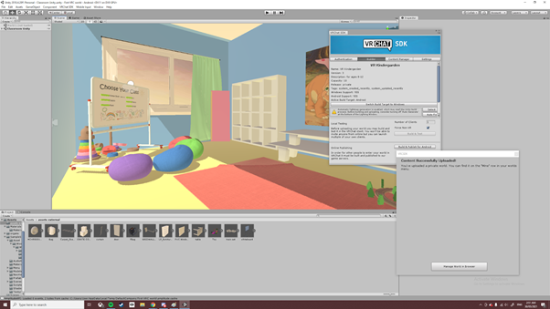Figure - proof of the world being published
Conclusion> Overall, we were able to progress through all the tasks we set to complete within the timeframe. If another group were to pick up where we left off, they would simply need to choose another of our pre-written classroom lessons, expand upon it and execute it in the same process that I have done above. Something that I would like the next team to know is- make your lesson designs, floor plans, and object drafts excessively detailed. This will help a lot in the building stages of the project. Personally, i would not have produced such a, organised and pleasant space without Alisa and Vansh’s great lesson and floor plans.